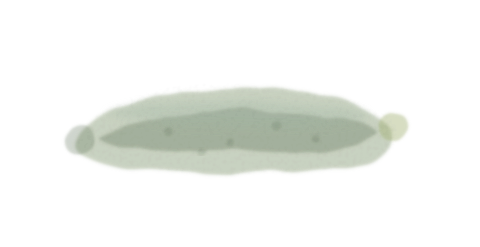
Session 01 ｜ 2026.7.7梅雨から夏へ
湿気と暑さを味方にする食養生
- 梅雨に身体が重くなる理由
- 夏に向けて消化力を守る食べ方
- 夏野菜との付き合い方
- そうめんと夏バテの意外な関係
- 薬味、酸味、発酵食品の夏の役割
- 冷たいものを摂りすぎた時の反応
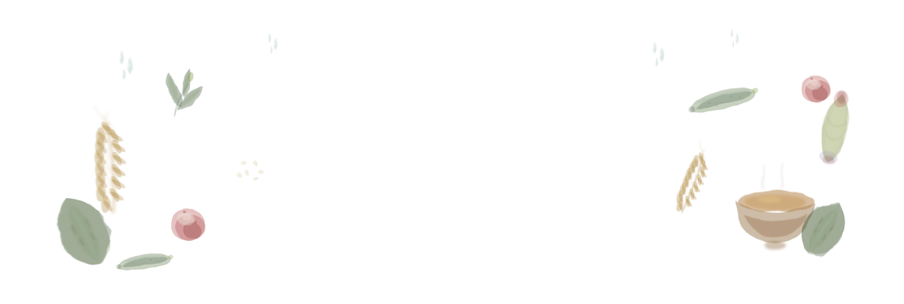
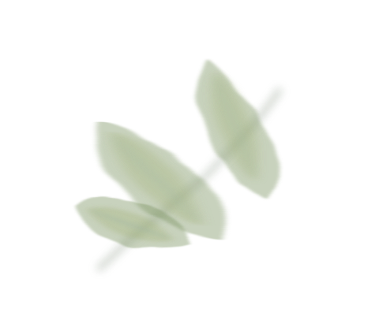
梅雨になると重だるい。
夏は食欲が落ちる。
秋になると乾燥が気になる。
冬は冷えやすい。
そんな季節ごとの身体の変化を、
「仕方ないこと」として過ごしていませんか。
身体は、季節に反応しています。
その反応を知ることは、
自分を責めることではなく、
自分の身体をより丁寧に扱うための第一歩です。
けれど、それは年齢だけのせいとは限りません。季節、消化力、食べ方、日々のリズムの影響を、身体は静かに受けています。
季節によって、消化力は変わります。
夏に胃が重い。冬に食欲が増す。
それは身体が自然のリズムに反応しているサインかもしれません。
日本の気候は、とても繊細です。
梅雨、高温多湿、台風、寒暖差。
インドとも欧米とも違う環境の中で、私たちは暮らしています。
身体に良いものも、季節や量で変わります。
胡瓜、トマト、スイカ、そうめん。
夏の定番にも、食べ方の知恵があります。
毎日の食卓を、
もう少し深く見つめてみませんか。
日本には昔から、季節に合わせた食べ方がありました。
その知恵をアーユルヴェーダの視点で読み解くと、
何気ない食卓の中に、身体を整えるヒントが見えてきます。
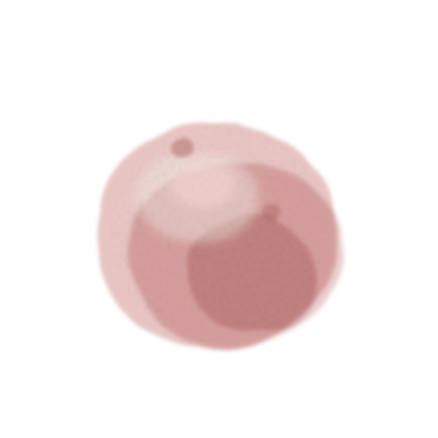
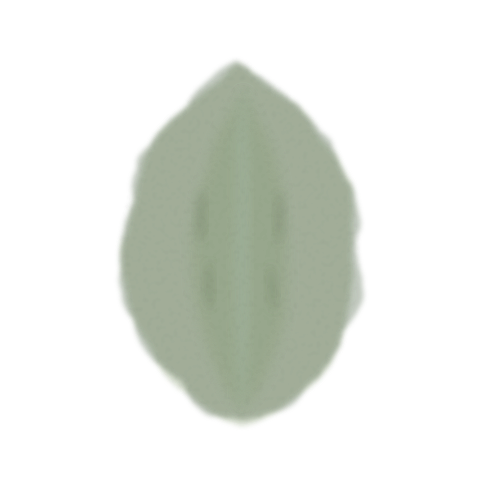
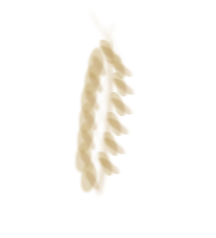
私たちが何気なく口にしているものの中には、先人たちが積み重ねてきた知恵が息づいています。
この講座は、新しい健康法を外から持ち込むためのものではありません。むしろ、日本の暮らしの中で受け継がれてきた知恵を、もう一度見つめ直すための講座です。
夏に梅を干す。
冷奴に生姜を添える。
胡瓜に薬味を添える。
味噌汁を毎日いただく。
なぜ、そうしてきたのでしょう。
その理由を、アーユルヴェーダという視点を通して読み解いていきます。
アーユルヴェーダを、
日本の暮らしの言葉で読み解く。
それが、この講座の大切なテーマです。
立春、清明、小満、夏至、白露、霜降。
二十四節気は、約15日ごとに移り変わる自然のリズムを表した暦です。
この講座では、二十四節気を暗記する必要はありません。
日本の季節を理解するための「地図」として使います。
その地図の上に、アーユルヴェーダの視点を重ねることで、
旬の食材や昔ながらの食べ方の意味が、
より立体的に見えてきます。
なぜ夏に梅干しなのか。
なぜ冬に味噌汁がしみるのか。
なぜ季節が変わると、食べたいものも変わるのか。
その理由を、季節と身体の両方から読み解きます。
レシピを覚えるだけではなく、
「なぜその食べ方が身体に合うのか」を学びます。
考え方が身につくと、
買い物や外食の選び方も変わります。

Session 01 ｜ 2026.7.7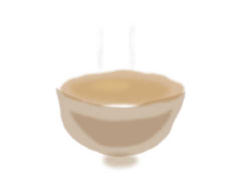
Session 03 ｜ 2026.10.20
各回約2時間。オンラインで開催します。
当日参加できない方には、アーカイブ動画をご用意します。
視聴期間の詳細は、お申込み前にご案内します。
講座はライブ形式のため、当日の質問も歓迎します。
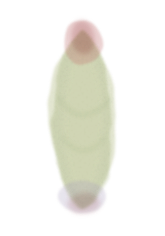
冷奴に生姜。
胡瓜に薬味。
夏に梅干し。
冬に味噌汁。
当たり前だと思っていた食べ方には、
身体を整えるための理由があります。
なぜ胡瓜には薬味を添えるのでしょう？
講座では、この食べ合わせを季節・消化力・身体の状態から読み解きます。いつもの薬味が、少し違って見えてきます。
なぜ冷奴には生姜を添えるのでしょう？
涼やかな食材に、なぜ香りや辛味を添えるのか。講座では、夏の定番料理に隠れた食べ合わせの意味を見ていきます。
なぜスイカは単独で食べる方がよいのでしょう？
夏に身近な果物にも、食べるタイミングや組み合わせの考え方があります。講座では、消化の視点から読み解きます。
なぜそうめんだけでは足りないのでしょう？
食べやすいはずのそうめんが、なぜ夏の疲れと関係するのか。講座では、夏バテと食べ方の意外な関係を扱います。
なぜ夏に酸味を活用するのでしょう？
梅干し、酢、柑橘。夏の食卓に残る酸味の知恵を、季節と身体の両方から読み解きます。
なぜトマトは食べすぎに注意なのでしょう？
身体に良いとされる食材も、季節や量で意味が変わります。講座では、夏野菜との付き合い方を具体的に考えます。
「なんとなく食べる」から、
「意味を知って選ぶ」へ。
その視点が身につくと、
スーパーに並ぶ食材も、
毎日の食卓も、少し違って見えてきます。
Siddhartha Satoru Murakoshi
アーユルヴェーダ医師（BAMS）。
インドで学び、日本で暮らし、日本人に教える。
インド国立アーユルヴェーダ大学でアーユルヴェーダ医学を学び、現在は日本を拠点に講演、教育、コンサルテーションを行っている。
二つの文化の間に立つからこそ見える視点から、日本の気候・食文化・生活習慣に合わせたアーユルヴェーダを伝えている。
本講座では、教科書の知識を覚えることよりも、
「日本でどう活かすか」を大切にします。
季節によってなぜ体調が変わるのか。
なぜ昔の日本人はその季節にその食材を食べていたのか。
それをアーユルヴェーダではどう理解できるのか。
四季と食を通して、自分の身体と自然とのつながりを見つめ直していきます。

YUKARI.
本講座では、アーユルヴェーダの理論を、日々の台所でどう活かすかを担当。特別な料理ではなく、毎日の食卓の中で無理なく続けられる知恵をお届けします。
村越シッダールタ悟は、身体と季節の関係をアーユルヴェーダの視点から読み解きます。
YUKARI. は、それを日本の台所でどう活かすかを伝えます。
医学と料理。インドと日本。理論と暮らし。
その二つが交わることで、知識が日常の食卓に根づいていきます。
村越シッダールタ悟
身体と季節の「なぜ」を読み解く
YUKARI.
日本の台所で実践に落とし込む
「日本の食材で説明してもらえて、アーユルヴェーダが初めて身近に感じられました。梅干しや薬味にこんな意味があったとは驚きでした。」
「ただの健康情報ではなく、"なぜそうするのか"がわかるのが面白かったです。自分で考えて食事を選べる感覚がありました。」
「コーヒーのライブがとても良くて、日常の飲み物にもこんなに理由があるのかと思いました。もっと深く学びたいです。」
「季節ごとの不調が、自分だけではないとわかって安心しました。梅雨の重だるさにも理由があったんですね。」
※ 掲載しているご感想は、過去の講座・Instagramライブ等に寄せられた内容をもとに、個人が特定されない形で編集しています。
✦ こんな方に向いています
— 向いていない方
※ この講座は医療行為ではありません。
疾患の診断・治療・処方は行いません。
食と季節についての教育的な内容をお届けします。
旬の野菜を見たときに、今の季節と自分の身体を思い浮かべられるようになります。
「なんとなく食べる」から、「今の身体に合うものを選ぶ」へ変わっていきます。
梅雨の重だるさ、夏の疲れ、秋の乾燥、冬の冷え。理由を知ることで、できることが見えてきます。
「これが身体に良い」という情報を、季節・体質・食べ方の視点から考えられるようになります。
味噌、醤油、梅干し、日本茶、薬味。先人の知恵の深さに気づくと、食卓が豊かに見えてきます。
春夏秋冬、それぞれの季節にどう食べ、どう過ごすか。自分の中に、暮らしの軸が生まれます。
2026年 7月7日（火）
開催時間：調整中
決定次第ご案内します
オンライン開催｜アーカイブあり
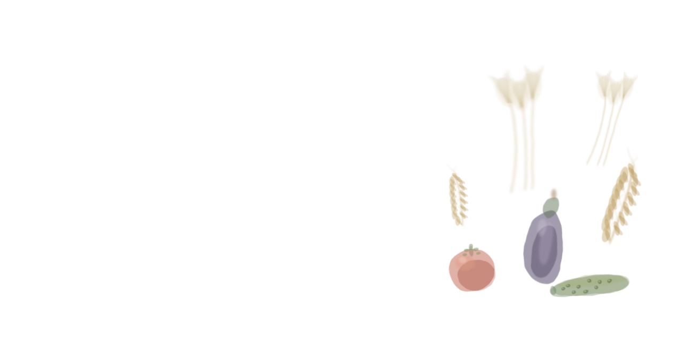
2026年 8月25日（火）
開催時間：調整中
決定次第ご案内します
オンライン開催｜アーカイブあり
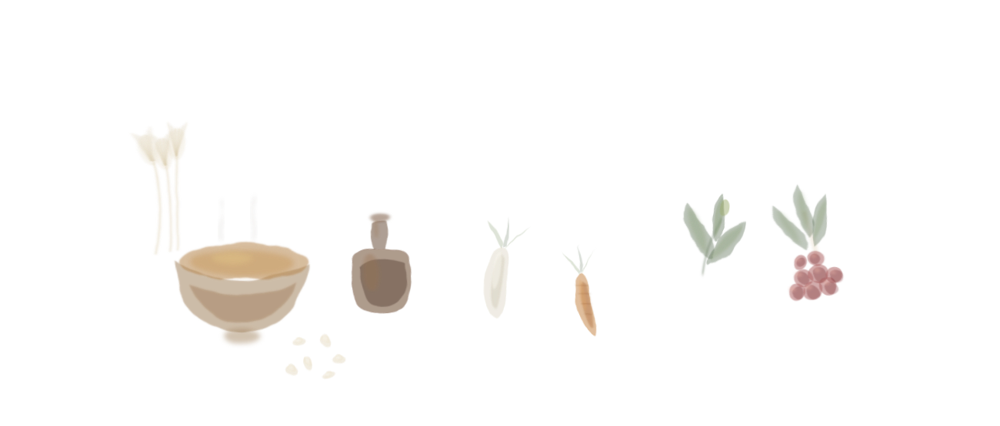
2026年 10月20日（火）
開催時間：調整中
決定次第ご案内します
オンライン開催｜アーカイブあり
◆ 各回約2時間を予定しています。
◆ アーカイブ動画をご用意します。視聴期間の詳細は、お申込み前にご案内します。
◆ 3回を通じて学ぶことで、季節の流れがより深く理解できます。
◆ 開催時間の詳細は、決定次第このページでご案内します。
この講座は、3回を通じて一年の季節の流れを学ぶ設計です。
深く学びたい方には、全講座受講コースをおすすめします。
1回あたり
講座3回＋特典合計 ¥150,000相当
特典6講座の合計価値
¥36,000以上相当つき
※ 価格はすべて税込です。
※ お申込み後のキャンセル・返金については、お申込みページの規定をご確認ください。
※ お申込みは、YUKARI.（viorto!）のSTORES商品ページに移動して行います。
季節の食養生をより深く理解するために、
土台となる知識を特典講座としてご用意しました。
特典合計価値 ¥36,000以上（全講座受講コースの方に特典としてお届けします）
通常価格¥11,000特典としてお届け
体質、消化力、食材の性質など、本講座をより深く理解するための基礎をわかりやすく解説します。
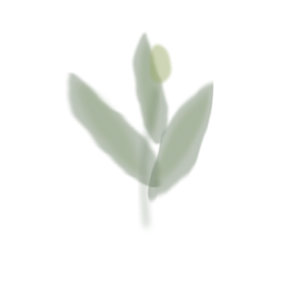
Bonus 02通常価格¥5,000特典としてお届け
緑茶、ほうじ茶、抹茶など、日本茶の性質と季節に合う飲み方を扱います。
通常価格¥5,000特典としてお届け
日本の食卓の要である醤油と味噌を、発酵と養生の視点で扱います。
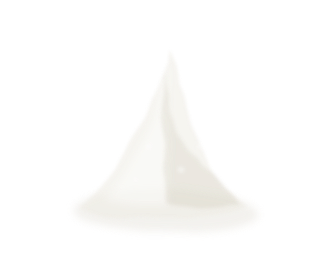
Bonus 04通常価格¥5,000特典としてお届け
料理の土台となる塩。種類、選び方、使い方、身体への影響を扱います。
Bonus 05通常価格¥5,000特典としてお届け
白米、玄米、もち米など、日本人の主食である米を季節と消化力の視点から考えます。
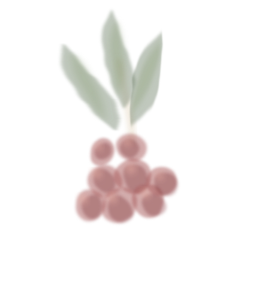
Bonus 06通常価格¥5,000特典としてお届け
砂糖、はちみつ、黒糖、みりんなど、甘味料の違いと身体への影響を扱います。
¥150,000以上相当
本講座3回 114,000円
＋ 特典講座 36,000円以上
全講座受講コースは ¥114,000（税込）でご参加いただけます。
はい、問題ありません。専門用語はできるだけわかりやすく説明します。全講座受講コースの方には、事前に学べる「アーユルヴェーダ基礎講座」も特典としてお届けします。
はい。各回アーカイブ動画をご用意しますので、ご都合に合わせてご視聴いただけます。視聴期間の詳細は、お申込み前にご案内します。
はい、可能です。ただし、3回を通じて季節の流れを学ぶ設計のため、全講座受講コースをおすすめしています。
具体的な食材や食べ方の例は豊富に取り上げます。ただし、この講座の中心はレシピを覚えることではなく、「なぜその食べ方が身体に合うのか」を学ぶことです。
はい。日本の気候、二十四節気、日本の食材にアーユルヴェーダを応用する視点は、経験者の方にも新しい発見がある内容です。
全講座受講コースの方へ、順次ご案内いたします。詳細なお届け時期は、お申込み前にご確認いただけるようご案内します。
お申込みは、YUKARI.（viorto!）のSTORES商品ページに移動して行います。お支払い方法やお手続きの詳細は、STORESの商品ページでご確認ください。
村越シッダールタ悟 × YUKARI.
2026年7月・8月・10月｜オンライン開催
税込｜全3回＋特典6講座つき
特典講座 36,000円以上相当つき
BAMS医師とYUKARI.から、二十四節気と日本の食文化を学ぶ
アーユルヴェーダ基礎・日本茶・醤油味噌・塩・米・甘味料
オンライン開催｜アーカイブ付き｜全講座受講コースは特典6講座つき
お申込みは、YUKARI.（viorto!）のSTORES商品ページに移動して行います。
日本の季節は、
春夏秋冬だけではありません。
約15日ごとに移り変わる二十四節気のリズムの中で、
私たちの身体も少しずつ変化しています。
日本の食卓に息づく知恵を、
アーユルヴェーダの視点で一緒に読み解いていきましょう。